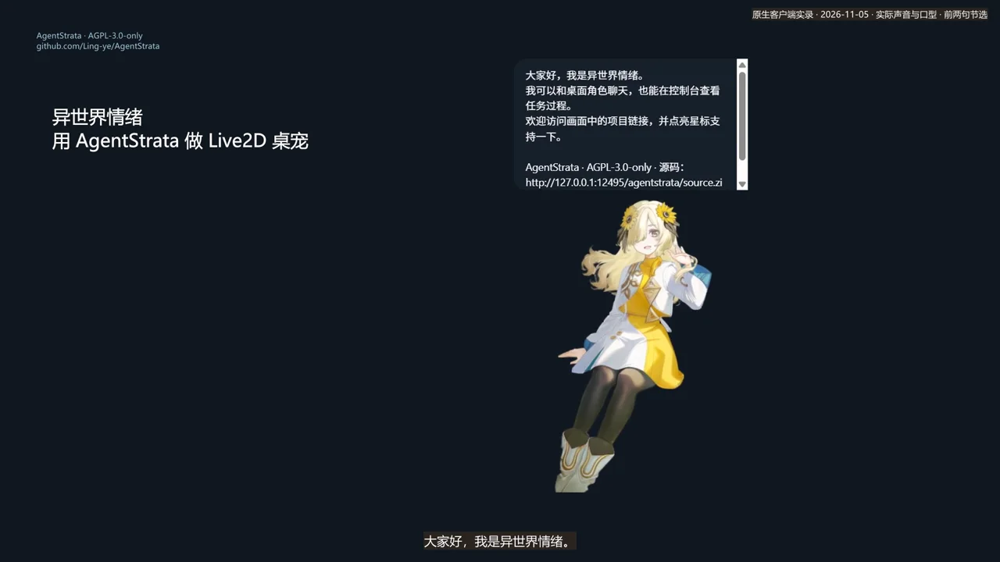
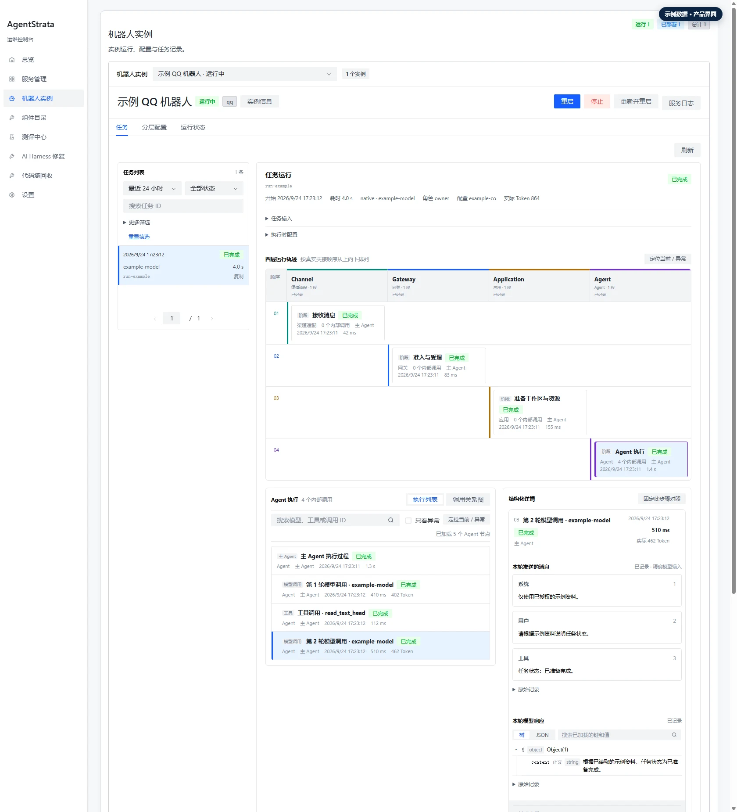

Windows 11 x64 · 开发者预览
AgentStrata Companion
桌面伙伴
让能对话、能使用工具的角色待在桌面上。用文字或语音交流，在角色界面中获得 Agent 的回应。
认识桌面伙伴OPEN SOURCE · BUILT FOR YOUR APPS
通过对话创建、运行和改进
Agent 应用的工作台。
AgentStrata 是面向应用的 Agent 引擎和工作台。
复用渠道、工具、控制台、测评和 Harness，
从一个能用的应用开始。
开源 · 本机运行 · 当前提供源码 MVP
一个运行底座，多种交互方式。
01 / BUILT WITH AGENTSTRATA
先选一个你想使用的产品。桌面伙伴和 QQ 助手各有自己的交互方式，共用 AgentStrata 的 Agent、工具与运行管理能力。

桌面伙伴
让能对话、能使用工具的角色待在桌面上。用文字或语音交流，在角色界面中获得 Agent 的回应。
认识桌面伙伴我想做一个 QQ 项目答疑助手。
说明用途，确认配置，连接你的官方机器人。
QQ 助手
把你的 Agent 带到 QQ 群和私聊。在 Studio 中描述用途，配置官方机器人，并检查、启动和管理应用。
认识 QQ 助手它是创建和管理应用的工作台。产品提供具体体验，AgentStrata 提供共同引擎；渠道、插件和工具是它们内部的组件。
02 / UNDERSTAND & IMPROVE
配置类修改直接确认应用。需要改代码时，复用已有 Harness、Eval 和 Console，检查候选版本，再决定是否启用。通用应用的一体化改进入口仍在完善。

Console · 任务运行视图从接入需求、运行问题或能力改进入手，组织调查、编码、测试与审核。
对照基线与候选，检查行为、工具结果和交付证据，识别改进与回归。
查看运行轨迹、评测与版本状态。在授权范围内启用通过验收的候选。
界面图片来自项目 README 的公开产品示例。具体执行与验收能力以项目文档为准。
03 / YOUR FIRST STEP
工作台和 QQ 官方机器人 MVP 已进入 main 源码。当前尚无公开 Release 安装包；先按构建指南准备工作台，再在界面中完成应用配置。
工作台面向 Windows 11 x64，使用 WSL2。安装入口会引导准备环境；当前需要从源码构建安装包。
QQ 平台账号、机器人资格、测试范围和公开上线仍需按平台要求准备。请勿将 Secret 填入聊天。
查看构建与使用指南 下载最新源码 ZIP本站是产品介绍与使用入口，不提供托管聊天，也不收集 API Key。应用在你的电脑上运行，关机或休眠会影响服务。QQ 官方机器人与 NapCat / OneBot 是不同接入方式。
GOOD TO KNOW
这里提供产品视频、源码与文档入口。对话、语音和工具调用由你部署的 AgentStrata 应用运行。按上方指南完成安装、模型配置及应用连接后，再通过对应客户端使用。
开发工作台面向 Windows 11 x64，使用 WSL2；独立 Live2D 客户端在 Windows 原生运行。标准 QQ 应用可用模型 API 配置运行，不要求 Codex 开发账号；需要写代码的任务目前仍要求配置开发模型并登录 Codex 开发账号。各连接的支持范围以工作台指南为准。
源码 MVP 支持同页配置、检查、启停，以及 WebSocket 群内 @ / 单聊被动文本回复。配置检查、进程运行、平台连接和真实消息往返分别判断。当前不包含媒体、主动消息、Webhook 或云托管；公开上线还需满足 QQ 平台要求。原有 NapCat / OneBot 指南作为另一条接入路径保留。
AgentStrata 自有代码与文档采用 AGPL-3.0-only。模型 API、算力及其他外部服务可能产生费用。第三方 SDK、模型和客户端资产保留各自许可，使用和再分发前请查看第三方声明。
保留的 V7 视频演示已有 Live2D 工具接入与公开源码导入，开发、验收和打包部分为步骤说明，并非现场生成。它早于本次 QQ 官方工作台 MVP，不作为新功能端到端验收证据。详见演示文字说明。